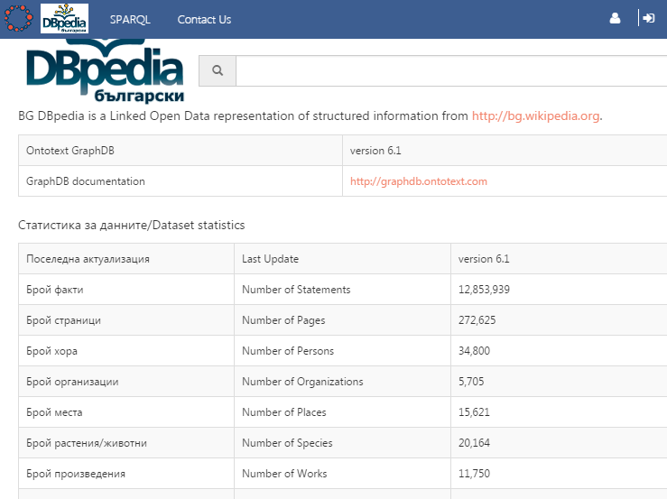
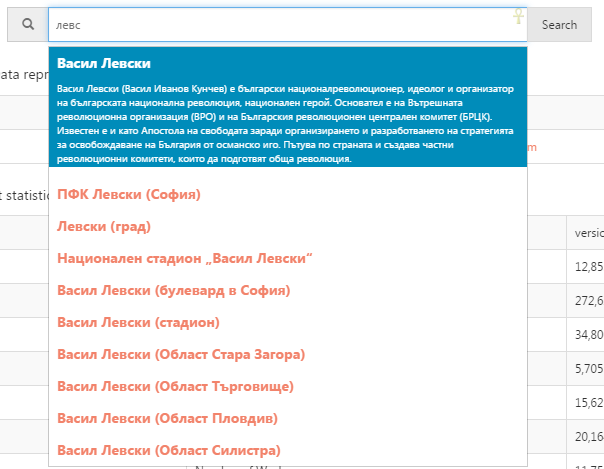
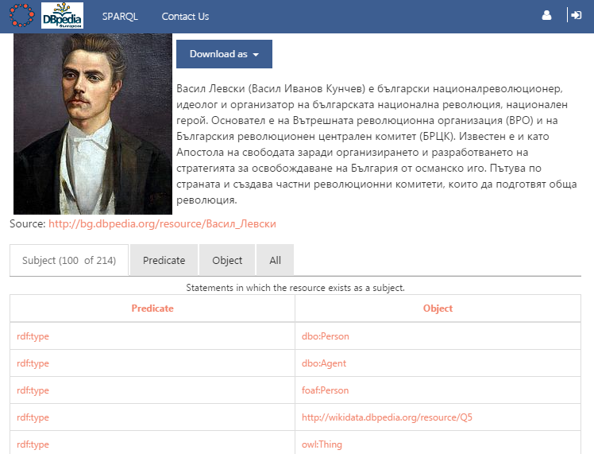
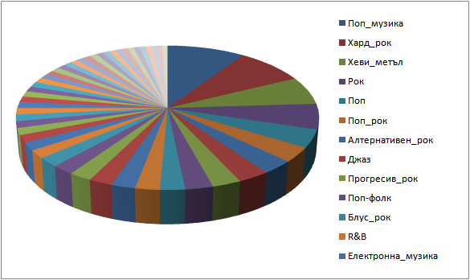

bg.dbpedia.org launched
Vladimir Alexiev & Boyan Simeonov
DBpedia Meeting, Dublin, Ireland, 2015-02-10
2D presentation (O for overview, ? for help). Continuous HTML. Publications
BG Wikipedia
There is an active BG Wikipedia community:
- Established December 2003 (on 15 Jan, the official 10-year anniversary of BG Wikipedia was celebrated in the press)
- As of Dec 2014, there are 185K articles on BG Wikipedia
- The Wikimedians of Bulgaria User Group was approved in late 2014
- The registration of a Wikimedia NGO is pending
- The BG Wikipedia community presented at the Wikimedia CEE conference 2014 (Kiev)
- See https://bg.wikipedia.org/wiki/Уикипедия:Уикисреща/Семинари/2015-01/бележки for more discussions, news and presentations
GLAM and BG Wikipedia & DBpedia
For a year now, an idea has been bandied around to focus BG cultural heritage documentation efforts around Wikipedia/DBpedia/Wikidata. These free information resources, the center of the Linked Open Data cloud, can enable cultural heritage workers to collaborate on describing the common elements of our Cultural Heritage. It's not right that foreign Wikipedias have more information about our kings, artists, politicians and events; and the data extracted in BG DBpedia is half missing and half wrong.
The BG Wikipedia community has done two GLAM projects, see Wikimedia-CEE-2014 Report
- A project with Sofia Zoo: nice information plates
- Digitization project with DA Arhivi
- Bulgarian_Archives_State_Agency on Commons
- Gallery: Images_from_the_Bulgarian_Archives_State_Agency
BASA-image mapped to DBpedia
https://bg.wikipedia.org/wiki/Уикипедия:Сътрудничество/Държавна_агенция_„Архиви“#Mapped_to_DBpedia
- 16 Jan 2015: Created the mapping http://mappings.dbpedia.org/index.php/Mapping_commons_talk:BASA-image.
- Now it extracts metadata, eg see
http://mappings.dbpedia.org/server/extraction/commons/extract?revid=&format=turtle-triples&extractors=custom&title=File:Hristogdanov.jpg - Or see http://mappings.dbpedia.org/server/mappings/commons/extractionSamples/Mapping_commons:BASA-image?namespace=File
- But there are still some things to fix: http://mappings.dbpedia.org/index.php/Mapping_commons_talk:BASA-image
BG Wikipedia Meeting
BG Wikipedia Chapter meeting on Sun 8 Feb 2015
- Discussed DBpedia, Wikidata and the value of data
- bgwiki already uses wikidata props, for Commons Category of geographic places
- Ontotext presented bg.dbpedia.org (still working on it!)
- A lot of interest for collaboration
- Upcoming meeting with Daniel Mietchen (coordinator of Wikidata 4 Research proposal in the H2020 VRE call)
Ontotext Motivation
Ontotext has long used DBpedia and other LOD datasets for NLP and semantic extraction tasks. Until recently, there was little interest and market for Bulgarian NLP applications, and few language resources. Recent developments in two domains have raised the interest:
- Cultural heritage: Bulgaria joined CLARIN and DARIAH (in Bulgaria it's a single programme CLADA), the Bulgariana.eu foundation was formed, and the upstarting Bulgarian Operating Program "Science and Education" includes cultural heritage Research Infrastructures.
- The European projects Europeana Food and Drink and Multisensor include Bulgarian language processing and Bulgarian contributions
Starting a bg.dbpedia.org chapter
Ontotext is in the middle of many of these developments, and we see the Bulgarian Wikipedia and DBpedia as crucial national resources to focus the efforts of the Bulgarian cultural heritage community.
- We started improving BG DBpedia mappings, reporting problems in the extraction & ontology, etc
- We're trying to initiate a corresponding project in BG Wikipedia. See https://bg.wikipedia.org/wiki/Уикипедия:BG_DBpedia for some background and practical examples.
- Ontotext has offered to host http://bg.dbpedia.org, which should be ready for review end of January 2015.
- Ontotext will attend the next international DBpedia meeting (9 Feb 2015, Dublin): http://wiki.dbpedia.org/meetings/Dublin2015. We'll talk/discuss on 2 topics:
- Improving the DBpedia ontology and mappings
- Starting a BG DBpedia chapter. We need a lot of advice on organizational matters.
bg.dbpedia.org Launch
Ontotext started hosting http://bg.dbpedia.org on 2015-02-05
- E.g. search for "левски"
- sample queries are upcoming (see ./sample-queries.html)
- Your feedback is welcome!
- If you have lots of feedback, we'll establish some tracker, like we did with DBpedia: http://github.com/dbpedia/mappings-tracker/issues
- Ontotext staff: please add any bugs you find as subtasks of https://jira.ontotext.com/browse/FF-300, or add a comment to https://jira.ontotext.com/browse/FF-312 if it's something minor
bg.dbpedia: Home Page

Search With Autocomplete

Resource Page (Vassil Levski)

Sample Queries (BG)
Брой факти
select (count(*) as ?c) {?s ?p ?o}
Брой страници
select (count(*) as ?c) {?thing foaf:isPrimaryTopicOf ?page}
Брой хора
select (count(*) as ?c) {?person a dbo:Person}
Брой организации
select (count(*) as ?c) {?org a dbo:Organisation}
Брой места
select (count(*) as ?c) {?place a dbo:Place}
Брой растения/животни
select (count(*) as ?c) {?place a dbo:Species}
Брой произведения
select (count(*) as ?c) {?place a dbo:Work}
Pages Without Type
Брой страници без тип
select (count(*) as ?c) { ?thing foaf:isPrimaryTopicOf ?page. filter not exists{?thing a ?type. filter (?type in (owl:Thing,dbo:Place,dbo:Species))}}
Страници без тип: с техните категории
select ?thing (group_concat(?cat;separator="; ") as ?cats) { ?thing foaf:isPrimaryTopicOf ?page. filter not exists{?thing a ?type. filter (?type in (owl:Thing,dbo:Place,dbo:Species))} ?thing dct:subject ?category. bind(strafter(str(?category),"http://bg.dbpedia.org/resource/Категория:") as ?cat) } group by ?thing
Page Stats
Най-големи страници
select * { ?x dbo:wikiPageLength ?len } order by desc(?len) limit 100
Страници с най-много линкове
select ?x (count(*) as ?links) { ?x dbo:wikiPageWikiLink ?l } group by ?x order by desc(?links) limit 100
Settlements and Problems (BG)
Най-големи нас.места:
PREFIX bgdbp: <http://bg.dbpedia.org/property/> PREFIX dbo: <http://dbpedia.org/ontology/> select ?x ?area { ?x bgdbp:wikiPageUsesTemplate <http://bg.dbpedia.org/resource/Шаблон:Селище_в_България>; dbo:areaLand ?area } order by desc(?area) limit 100
Wrong Data
- Най-големите НМ са Мътеница, Дебелец, Дъбовик, Ръжево, Мало Крушево?!?
https://bg.wikipedia.org/wiki/Мътеница_(село):
Землище 33 035 km²
https://bg.wikipedia.org/w/index.php?title=Мътеница_(село)&action=edit
| площ = 33 035
- Това е 1/3 от площта на България ;-)
- Ние приемаме, че "," и "." са десетичен знак, ама чак пък интервал…
- На друго място съм виждал изписано така:
1 nbsp;234, което се извлича като "1" :-(
- Ако изключим тези грешки, следващото НМ е София
- После е Батак?
- https://bg.wikipedia.org/wiki/Батак: Землище 461.105 km²: не ми се вярва
- Спас Колев казва, че е вярно. Това е землището на града (не само градската територия), и Батак включва голяма планинска територия.
- Надм. височина 1036m? Но Екатте дава интервал Надм. височина, м: 700 - 999 вкл http://www.ekatte.com/област-пазарджик/община-батак/батак
Place Parents
- Няма структурно поле, което да индицира Settlements само в Bulgaria.
В момента информацията за административната структура на местата (и броят население) не може да се извлече
- Причина: в bg.wikipedia, голяма част от информацията е заключена в lookup lists in sub-templates, като "ekatte" се ползва за ключ.
Напр за Мътеница https://bg.wikipedia.org/w/index.php?title=Мътеница_(село)&action=edit
{{Селище в България | екатте = 49624 | надм-височина=441 ...- Извън шаблона (в свободен текст) се казва: "село в Южна България. То се намира в община Хисаря, Област Пловдив". Тези се извличат като линкове, но не в структурни полета.
- The extraction framework cannot extract data from such lists. See issue #305: resolving lookup-list data out of sub-templates
Places With Biggest Population
Населени места с най-голямо население
PREFIX bgdbp: <http://bg.dbpedia.org/property/> PREFIX dbo: <http://dbpedia.org/ontology/> select * { ?x bgdbp:wikiPageUsesTemplate <http://bg.dbpedia.org/resource/Шаблон:Селище_в_България>; dbo:populationTotal ?pop } order by desc(?pop) limit 100
Ура! Тези май са верни :-)
Musical Artists (BG)
Музикални изпълнители и групи
PREFIX dbo: <http://dbpedia.org/ontology/> select * { ?x a ?type filter (?type in (dbo:MusicalArtist, dbo:Band)) }
- 2559. Но само 111 са dbo:MusicalArtist?!? Напр. Лили Иванова и Горан Брегович излизат като dbo:Band (и оттам dbo:Organisation ;-))
Причината е, че мапингът Музикален_изпълнител имаше следният проблем:
{{ Condition | templateProperty = фон | operator = isSet | mapping = {{ TemplateMapping | mapToClass = Band }} }}- Т.е. ако има поле "фон", то приеми че е Група. Напр. Горан Брегович: фон = инструменталист
Conditional Mapping
Сега го оправихме да има следната сложна логика:
- Ако има поле "състав", "бивши_членове" или "създадена" -> Band
- (Ами "членове"? Не знам)
- Ако "фон" съдържа "група", "квартет", "ансамбъл", "хор" -> Band
- Ако "фон" съдържа "композитор" -> MusicComposer
- Ако "фон" съдържа "диригент" -> MusicDirector
- Ако "фон" съдържа "певица" -> MusicalArtist, gender=dbo:Female
- Ако "фон" съдържа "певец" -> MusicalArtist, gender=dbo:Male
- Ако "фон" съдържа "пианист" -> MusicalArtist, gender=dbo:Male
- Ако има поле "наставка" -> MusicalArtist, gender=dbo:Female
- Иначе -> MusicalArtist, gender=dbo:Male
Data Improvement
- Вече Лили Иванова не е Band (и Organisation), а MusicalArtist, gender=dbo:Female. Ура!
- Макар че някои биха оспорили, че де-факто тя е институция в българската музика
- По принцип шаблонът https://bg.wikipedia.org/wiki/Шаблон:Музикален_изпълнител казва, че "фон" трябва да е: певец, инструменталист, не_изпълнител, временно.
- Но има мноого изключения, напр. "фолк певица" (е може ли без нея)
- Нашият мапинг следва реалните данни
- Тригонометрична_функция и България_на_Световното_първенство_по_футбол_1994?!?
- Преди ползваха шаблон "Музикален изпълнител"
- Но вече не, напр https://bg.wikipedia.org/w/index.php?title=Тригонометрична_функция&diff=6434190&oldid=5927191
- При следващото извличане ще се актуализират и ще отпаднат от този списък
Musical Genres
Музикални изпълнители за които са посочени жанрове
PREFIX dbo: <http://dbpedia.org/ontology/> select ?x (group_concat(?genre;separator="; ") as ?genres) { ?x a ?type. filter (?type in (dbo:MusicalArtist, dbo:Band)) ?x dbo:genre ?g. bind (strafter(str(?g),"http://bg.dbpedia.org/resource/") as ?genre) } group by ?x
Popular Genres
Музикални жанрове по популярност
PREFIX dbo: <http://dbpedia.org/ontology/> select ?genre (count(*) as ?c) { ?x a ?type. filter (?type in (dbo:MusicalArtist, dbo:Band)) ?x dbo:genre ?g. bind (strafter(str(?g),"http://bg.dbpedia.org/resource/") as ?genre) } group by ?genre order by desc(?c) limit 20
- 520 жанра
Най-популярните са
Поп_музика 356 (изненада!) Хард_рок 313 Хеви_метъл 238
Making Charts

Blogs/Tweets
Please retweet, post to facebook & linkedin
- Bulgariana blog: publicizing Wikipedia/DBpedia with GLAMs
- https://twitter.com/valexiev1/status/556093880681398272: bg.dbpedia project
- https://twitter.com/valexiev1/status/563651292040822785: bg.dbpedia launch